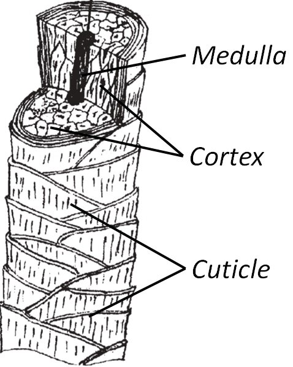

Describe the structure of the human hair follicle. Human hair consists of four main parts; the papilla part, hair matrix, the bulge, and the root sheath. The papilla is located at the base of the follicle and is made up of capillary loop and connective tissues. The hair matrix is the layer that surrounds the papilla. The root sheath is divided into two; internal and external root sheath. Lastly, the bulge is positioned at the arrector pili muscle insertion point and around the outer root sheath .
 Describe the structure of the human hair shaft. The shaft of human hair is made up of the cuticle cells, the cortex, and the medulla. It is made up of three parts; the medulla, the cortex, and the cuticle. It is also surrounded by glands like the sebaceous gland responsible for producing sebum that lubricates the hair. The sebum also protects the skin from becoming dehydrated and being damaged by external factors. The hair shaft parts have attributes like the shape, scales, and medulla patterns that are used for the source of hair identification.
What are pigment granules? What is their origin? What colors do they come in? What pigments do they contain? Where in the hair shaft are pigment granules found? Consult and cite multiple sources. The cortex contains most of the pigment granules. Pigment granules are dark vesicles bounded by a subcellular membrane that contains a pigment precursor molecule. They originate from endosomes, lysosomes, reticulum, coated vesicles, etc. They are distributed towards the medulla, and their color varies from pigment to pigment . They are small and solid dark structures which are considerably lower than cortical and granular in appearance. They develop in vesicles somewhere near the nucleus of the melanocyte. Their color varies in a single hair, and their distribution differs too within the same hair.